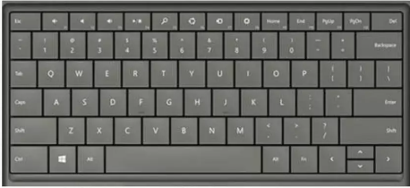
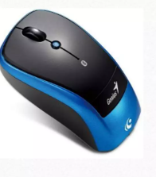
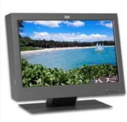
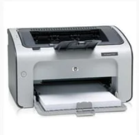
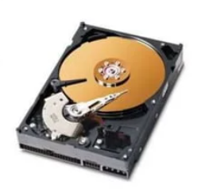

Input is any data or instruction enterd into the
memory of a computer
Any hardware component allows user to enter data and
instructions in to a computer
Keyboard

Used to enter information into the computer
and for giving commands.
A standard computer keyboard is called a QWERTY keyboard.
Ball Mouse

An input device operated by rolling its ball across a flat surface.
The mouse is used to control the on-screen pointer by pointing
and clicking, double-clicking, or dragging objects on the screen.
Optical Mouse
It is an advanced computer pointing device.
it uses Light-Emitting Diode(LED) in place of the traditional mouse ball.
Movement is detected by sensing changes in reflected light.
2. Output Unit
The job of ouput unit is just the reverse of that of an
Input Unit.
It supplies information and results of computation to
the outside world.
Monitor

A display screen is used to provide "ouput" to
the user. It is where you can view the
information you are working on.
Printer

And ouput device that prodeuces a hard of the information.
Information to the user is in pronted form.
3. Memory / Storage Devices
All computer need to store data
Data is stored temporally while program is running
-Main Memory.
To store data for long-term, to preserve programs and data
while not in use - Backing Storage.
Hard Disk

Access to data is far faster than access to data in floppy disks.